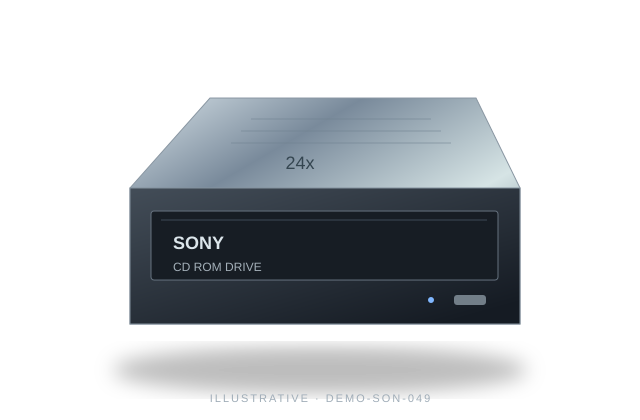

Loading catalogue controls…

Illustrative product image
Sony / cd-rom-drive
Sony 24x CD-ROM drive PATA-IDE
24x CD-ROM drive PATA-IDE for reading legacy installation discs. An educational sample with clearly stated compatibility.
Demo SKU DEMO-SON-049 · OG-049
- Drive type: Read-only CD-ROM
- Maximum CD read speed: 24x
- Interface: PATA / IDE
PKR 3,590.00
Educational demo price
Requires the matching host interface and operating-system optical-drive support. Check chassis and power connections before fitting an internal drive.
More from Sony ↗Specifications
| Drive type | Read-only CD-ROM |
|---|---|
| Maximum CD read speed | 24x |
| Interface | PATA / IDE |
| Supported media | CD-ROM, CD-R; CD-RW subject to disc compatibility |
| Form factor | 5.25-inch internal |
| Write capability | None |
Made for these uses
- Reading legacy installation discs
- Retrieving archived files
Sample product feedback
Sample review: the listed format and compatibility make it easier to check a legacy workflow before choosing media.
Illustrative review, not a verified customer endorsement.